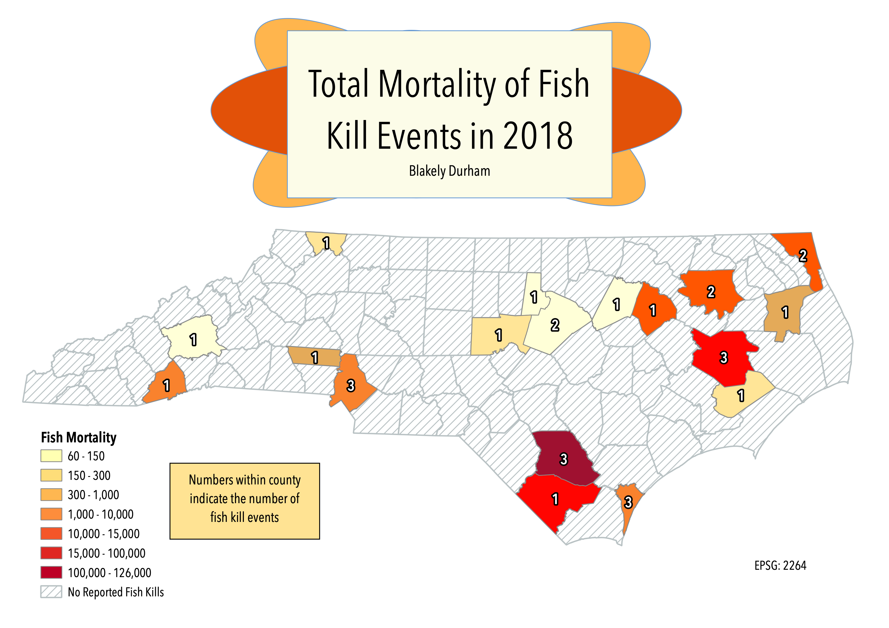

Homework 7: Choropleth

This map shows the fish kill events in each county and their total estimated mortality in 2018. This only includes fish kill events confirmed by the NC Division of Water Resources. 2018 is an especially significant year as Hurricane Florence made landfall in NC, causing 8 of the 29 confirmed fish kill events represented on the map.
Data used for this project
Cleaned csv dataset
DWR Reports
NC Counties geoJSON